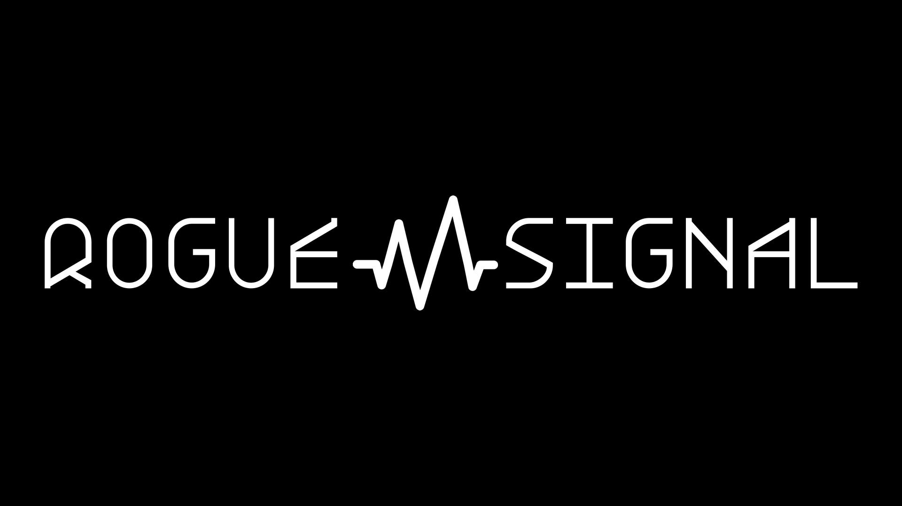

Find the story
Hermes supports news research and source gathering. Claims and uncertainties are recorded before a script is approved.
HERMES · ORIGINAL SOURCESINDEPENDENT AI NEWS / OPEN EXPERIMENT
One story. Thirty seconds. Sources included.
A new signal in the noise, built with AI and guided by human judgement.
THE AMBITION: ONE SHORT, EVERY DAY.
01 / ON AIR
The first upload is our launch experiment.
The newsroom is taking shape.

▶WATCH ON YOUTUBE ↗An introduction to the project: AI news in a short, clear format, with the process shared as we build it.
THE EDITORIAL PROMISE
AI moves quickly. Understanding takes care. We aim to explain what happened, why it matters, and what is still uncertain—with original sources behind the story. The presenter is synthetic. Editorial responsibility stays human.
02 / BEHIND THE SIGNAL
Different tools, defined roles.
Barry makes the final call.
Hermes supports news research and source gathering. Claims and uncertainties are recorded before a script is approved.
HERMES · ORIGINAL SOURCESChatGPT helps shape the story, scripts and project documentation. Obsidian keeps decisions and episode notes together.
CHATGPT · OBSIDIANClaude supports the ComfyUI production workflow. Two 15-second presenter clips are generated locally and edited into a Short.
CLAUDE · COMFYUI · RTX 5080Human review checks the spoken words, the story and the final edit. Publishing is currently manual as the workflow develops.
HUMAN REVIEW · YOUTUBE03 / OPEN NOTEBOOK
The repository shares the code and production documentation behind Rogue Signal. Follow the experiments, inspect the workflow, and see what changes next.
Open the GitHub repository ↗Local presenter generationTwo clips, one 30-second edit
First launch trial publishedThe starting point for the project
Source-backed news episodesEditorial preparation underway
Daily automated productionThe goal, still being developed